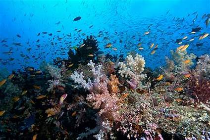
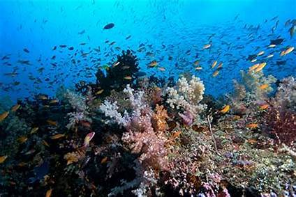

Taman Laut Bunaken
Destinasi wisata di Indonesia yang populer di mancanegara adalah Taman Laut Bunaken yang berada di Teluk Manado.
Bunaken menjadi salah satu objek wisata di Indonesia yang mengundang decak kagum karena keindahan taman bawah lautnya yang sulit ditemukan di negara lain.
Berkunjung ke Taman Laut Bunaken, Toppers akan menemukan keindahan kehidupan di dalam laut yang membuat mata kamu tidak bisa berhenti memandangnya.
Di dalam taman laut ini terdapat 13 jenis terumbu karang yang didominasi dengan bebatuan laut.
Selain itu, pemandangan yang paling menarik adalah adanya terumbu karang terjal vertikal yang menjulang ke bawah sedalam 25 – 50 meter. Tidak sampai di situ, mata kita akan dimanjakan dengan 91 jenis ikan yang ada di dalamnya.
Tidak heran kalau Taman Laut Bunaken menjadi salah satu destinasi bagi para wisatawan terutama para pecinta laut.
Apalagi tujuan wisata Indonesia favorit wisatawan asing ini menyediakan fasilitas untuk scuba diving dengan 20 titik penyelaman terbaik, di mana penyelam dapat kesempatan berenang di dasar laut dengan beragam biota laut yang menakjubkan.
Flora dan Fauna
Menurut wikipedia.com ,Taman Nasional Bunaken memiliki ekosistem terumbu karang yang sangat kaya. Terdapat sekitar 390 spesies terumbu karang di wilayah ini. Spesies alga yang dapat ditemui di Taman Nasional Bunaken adalah Caulerpa, Halimeda dan Padina, sementara spesies rumput laut yang banyak ditemui adalah Thalassia hemprichii, Enhallus acoroides, dan Thalassaodendron ciliatum. Taman Nasional Bunaken juga memiliki berbagai spesies ikan, mamalia laut, reptil, burung, moluska dan mangrove. Sekitar 90 spesies ikan tinggal di perairan wilayah ini.
Di daratan, pulau ini kaya akan Arecaceae, sagu, woka, silar dan kelapa. Selain itu, Taman Nasional Bunaken juga memiliki spesies hewan yang tinggal di daratan, seperti rusa dan kuskus. Hutan mangrove di taman ini menjadi habitat bagi kepiting, lobster, moluska dan burung laut.
Aktivitas Manusia
Di wilayah ini, terdapat 22 desa dengan jumlah penduduk sekitar 35.000 jiwa. Kebanyakan dari mereka bekerja sebagai nelayan atau petani kelapa, ubi jalar, pisang dan rumput laut untuk diekspor, sementara sebagian lainnya bekerja sebagai pemandu, pekerja di cottage dan nakhoda kapal.